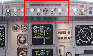
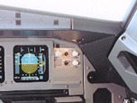
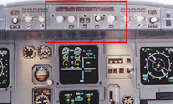
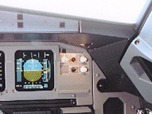
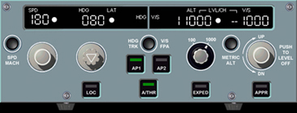

Instrument Lighting Control Panel
        
|
FCU Lighting Control Knobs
LEFT FCU CONTROL KNOB - The left FCU knob controls the integral panel lighting of FCU labels, knobs, and switches.
RIGHT FCU LT CONTROL KNOB - The right FCU knob controls the integral panel lighting adjustment of FCU numerical displays.
